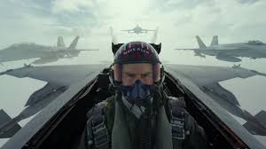

As I mentioned my name in heading, I completed my btech from lakireddy balireddy college of engineering mylavara in specialized department of computer science and engineering with cgpa of 8.81/10 scale , actually i am bad student every professor compliants about me on my attitude but good in studies beacuse of that every one leave me without any punishment , mostly I spend in the ground by playing cricket and chit chat with my friends.
Top gun maverick was overall impeccable. It just blew my mind I didnt think a movie could be that good. I have saw it 3 times in the last two weeks since it came out and it is better every time. The characters are great new ones and old ones.And the most important thing is that its fun to watch.You can really immerse yourself into this experience and its definitely worth it to go see it. I was so astonished by this movie that even after 3 times of seeing it I still would like to get it at my home so I can watch it whenever. There are just so many great moments that really helps you connect to the story and the plot line.And lets just say they had a fantastic cast .All the actors were just phenomenal.I have been looking forward to this movie since before Covid and quarantine happening and they announced it was done being filmed. As much as it bugged me that I had to wait It was so worth it . There were also lots of tears shed at least for me in the theater.I cried a lot during the first time but I have noticed that no matter how many times you have watched it some of the moments still just hit you like wow.The bond between maverick and rooster makes my heart happy. And the scene with iceman as well just brings me to tears.And I know everyone wants to hear about the beach scene which again didnt disappoint.I know some people wont like this but I think it was even better then the first volleyball scene. Again it just makes me smile. Its such a great montage and then you realize how hard these guys worked for it constantly working out in their interviews they describe it as “living in the gym” . And even tho Louis Pullman who plays Bob is the only one who wears a shirt he really pulls it all together.When Bob is sitting on top of miles shoulders and everyone is chanting “Bob! Bob!” you just understand how much of a team they are.And whoever came up with this plot line needs a raise I mean its just so incredible. Even thought I do wish Charlie was in Top Gun Maverick I think its really great what Pete has going with penny. All I can hope for is possibly Top Gun 3 in the future .Hopefully it wont take 36 years for it to come out again so my dad could see it. I am just in love with this movie and I love the actors, and the plot, the actual planes, and the effort put into all of this.I dont care what you say no movie will ever and I mean ever make me as happy as Top Gun Maverick. I cry every time when Iceman says his quote “The navy needs Maverick. The kid needs Maverick. Thats why I fought for you, thats why your here.”It is so tremendously sad when Iceman dies . And Val Kilmer despite his condition with his throat dose a fantastic job bringing back the old iceman we know and love. And I have got to say Miles Teller just is the only person who fits the role of Bradley Bradshaw. I mean yes the mustache and the piano but Miles just brings the character to life and I appreciate that. And thanks to his wife Keleigh Teller the live version of him singing Great balls of fire at the bar with the other pilots is on Spotify. And while Im doing shout outs one definitely needs to go to Glen Powell and Monica Barbaro. Monica did such a good job playing a newer female role model and I loved her . Glen did such a great job playing the cocky the guy you werent supposed to like. I will say it did bug me that Hangman didnt go save Maverick right away even though his request was denied . But it was a hilarious moment for Rooster and Maverick to have after Rooster lands from ejecting . I would say that is my favorite part of this new movie but I have lots. 😁 Loved it
| City | Location | Time |
|---|---|---|
| chennai | beach | 30min |
| delhi | presidenthouse | 30min |
| newyork | timesquare | 30min |